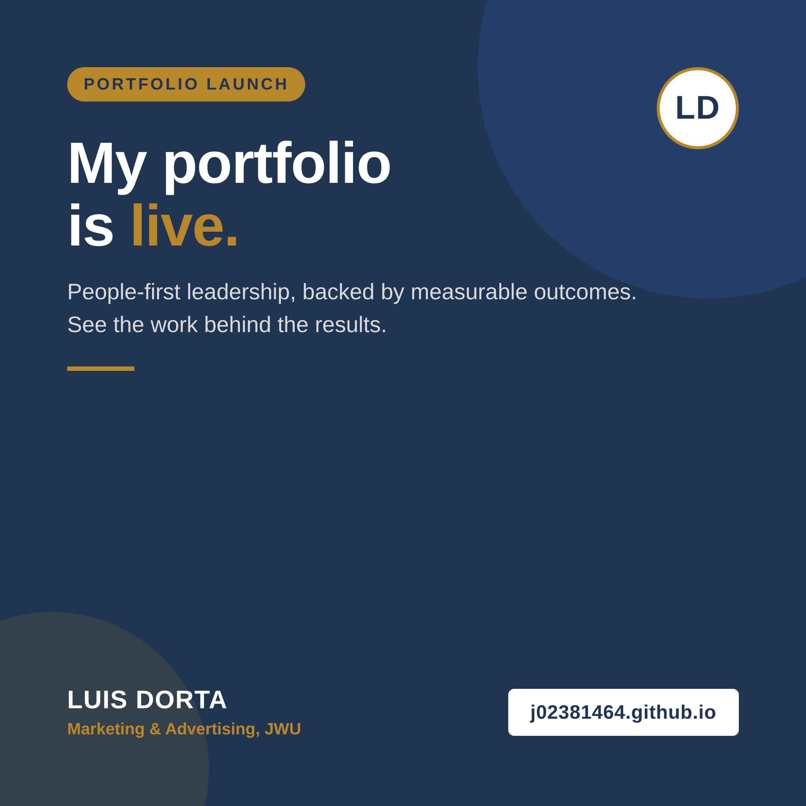
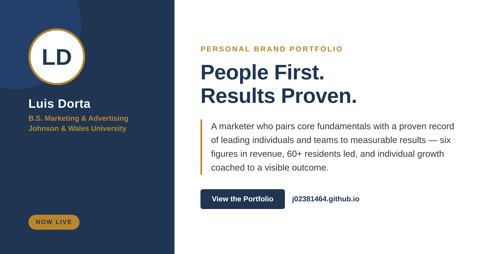

For employers and clients who need a marketer who can turn a plan into people moving toward a shared goal — I pair core marketing fundamentals with a proven record of leading individuals and teams to measurable results.
View My Work Get In TouchA brand built on people-first leadership, backed by measurable outcomes.
As an ENFJ-A, I lead through people while staying structured enough to turn a vision into a plan others can follow — and that shows up directly in results I can point to: six figures in revenue generated across hundreds of accounts at Aptive, leadership for 60+ residents and support for 300+ students as a Resident Assistant at JWU, marketing my private soccer training to 50+ families, and coaching an athlete at Soccer Genome whose confidence — not his ability — was holding him back, until a consistent plan moved him up to a higher team.
Each project below is traceable to a specific mentor, credential, or role — not a generic bullet.
Built a bilingual customer-engagement playbook for Sherwin-Williams' Hispanic Pro segment from surveys, contractor interviews, and purchasing-behavior analysis.
Managed 150+ accounts across two sales seasons, exceeding revenue targets while building durable customer relationships.
Led community programming and day-to-day support for a residence hall, balancing individual student needs with hall-wide initiatives.
Built a consistent training plan for an athlete whose confidence — not his ability — was holding him back.
Group project (ADVC4020): a full rebrand strategy repositioning YETI around verifiable sustainability — brand audit, new positioning and brand elements, storyboard, and an integrated marketing communications plan, delivered as a narrated presentation.
The scannable version, styled to match the rest of the site.
Led the Dímelo Hispanic Pro Playbook project and the Hearts & Hammers community-service initiative.
Generated $217K+ in revenue across two seasons managing 150+ accounts.
Led programming and support for 60+ residents, 300+ students.
Individual-growth training for 50+ families.
MBA concentrated in Data Analytics, followed by a marketing/business-analytics role driving measurable growth at a company investing in AI-driven strategy.
Marketing and advertising recruiters, JWU faculty and alumni, and industry mentors — I'd welcome the conversation.
Especially open to conversations through the JWU Alumni Network — always happy to trade notes with fellow Wildcats navigating marketing and business careers.
Getting the word out
Sample posts for launching this portfolio across LinkedIn and Instagram, built in the same navy-and-gold visual identity as the site.

